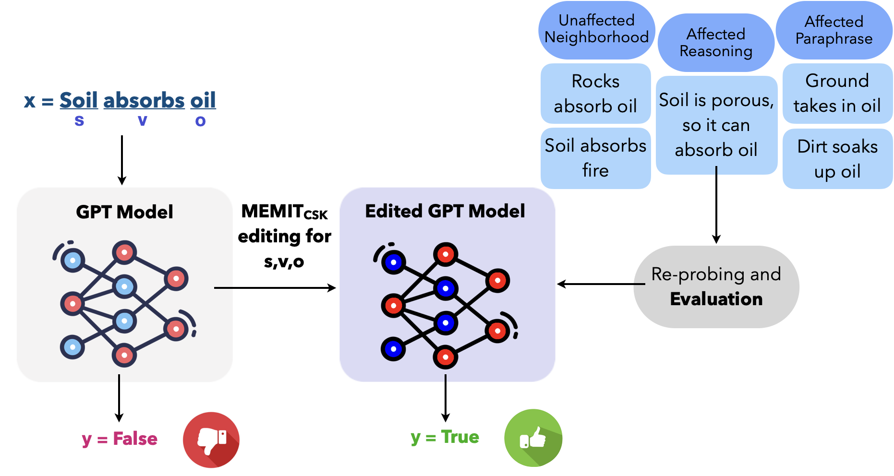
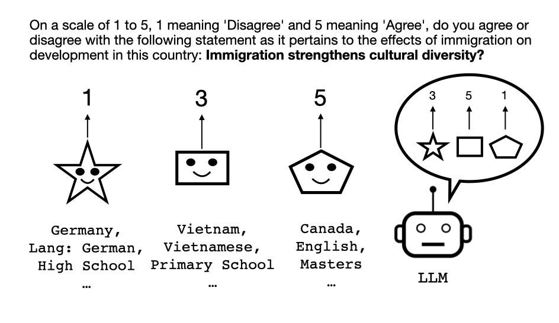
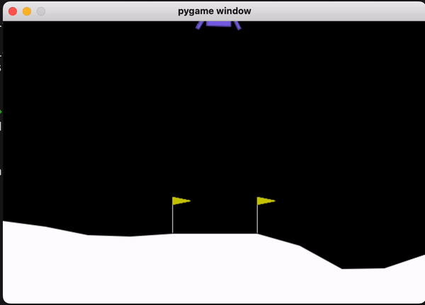
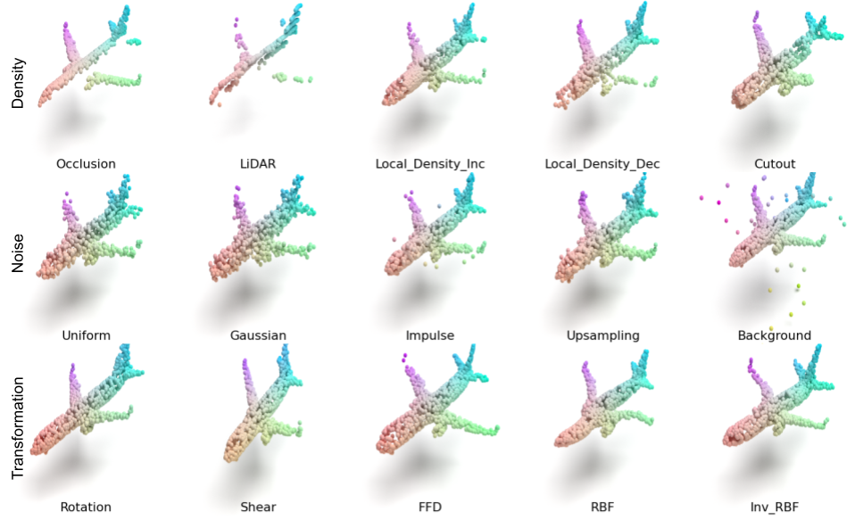
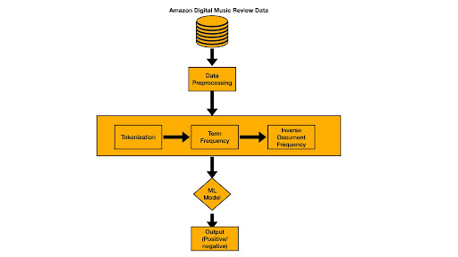
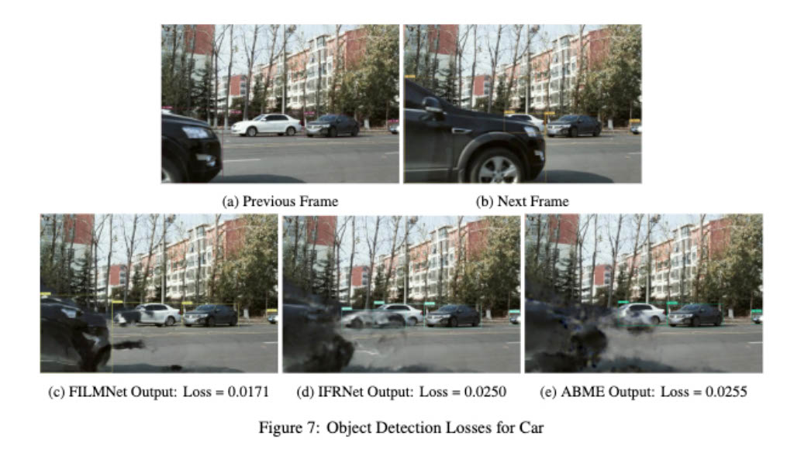
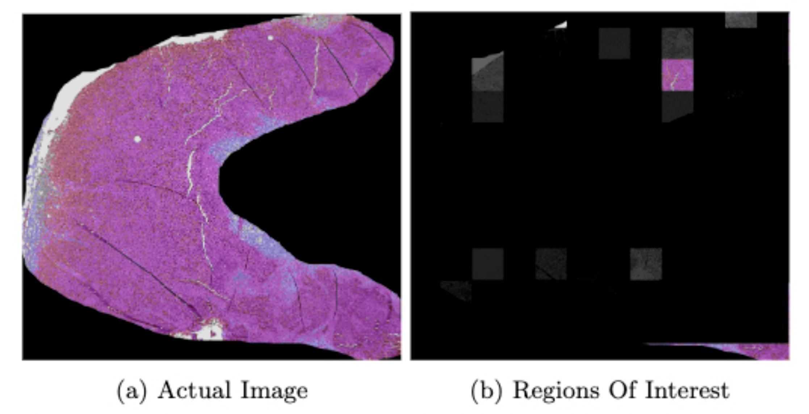

|
Debanjan Mondal Hello, everyone! I am currently pursuing a Master's degree in Computer Science at the University of Massachusetts Amherst. I am also working with the Allen Institute of AI (AI2) as a Student Researcher. My research revolves around Natural Language Processing, Computer Vision and Reinforcement Learning with a specific focus on exploring the moral and commonsense reasoning capabilities of Large Language Models (LLMs) I have two publications in EMNLP. I completed my Bachelor's in Computer Science from Indian Institute of Technology (IIT) Bombay in 2020. After that I worked as a Full Stack Software Engineer at LG Ad Solutions for two years. I also had the opportunity to intern at Ubisoft. Beyond my technical expertise, I am passionate about leveraging AI for the betterment of society and environment. In Summer 2023, I collaborated with Red Cross in analyzing pre and post-disaster satellite images to determine the number of damaged buildings in disaster-hit areas. This effort helped to expedite relief processes. I am also passionate about animal biodiversity and eager to contribute in conservation efforts. |
{kind=link}
Publications
|
|

|
Editing Common Sense in Transformers
Anshita Gupta, Debanjan Mondal, Akshay Krishna Sheshadri, Wenlong Zhao, Xiang Lorraine Li, Sarah Wiegreffe, Niket Tandon Conference on Empirical Methods in Natural Language Processing (EMNLP), 2023 code / arXiv We observed a strong correlation between commonsense judgments and early layer MLP parameters in GPT-2 models. Inspired by that, we proposed MEMITCSK , a model parameter editing strategy to edit commonsense mistakes in GPT-2 Large and XL models that outperform baseline fine-tuning strategies by more than 10.5% accuracy on PEP3k and 20Q datasets. For evaluation, we constructed a dataset of 21000 challenging commonsense statements for model editing evaluation using GPT-3. |

|
Understanding Code Semantics: An Evaluation of Transformer Models in Summarization
Debanjan Mondal, Abhilasha Lodha, Ankita Sahoo, Beena Kumari GenBench Workshop at Conference on Empirical Methods in Natural Language Processing (EMNLP), 2023 code / arXiv We evaluated LLM’s code summarization ability with by applying semantic preserving code transformations on existing code summarization benchmark CodeXGLUE. We applied transformations like renaming identifiers, adding commented code and introducing dead or unreachable code snippets. Our findings revealed that while models such as CodeT5 and CodeBERT excel with well-written code, their performance notably declines when confronted with our modified benchmark. Additionally, fine-tuning on both clean and modified datasets led to performance enhancements across both code variants. |
|

|
WORLDVALUEBENCHMARK: A Global-Scale Dataset for Aligning
Language Models to Multi-Cultural Human Values
Debanjan Mondal, Wenlong Zhao, Niket Tandon arXiv, 2023 code / arXiv We proposed WORLDVALUEBENCHMARK, the first global-scale dataset to study multi-cultural human value alignment in LMs. We further prposed three evaluation facets, focusing on dependency alignment, rating alignment and demographic biases. After probing recent LLMs like GPT-3.5 and LLaMA 2, we observed that there is significant room for improvement. |
Academic Projects |
|

|
Optimization and Evaluation of RL algorithms
Debanjan Mondal, Sriharsha Hatwar Course: Reinforcement Learning, Prof: Bruno Castro da Silva, UMass Amherst, 2023 pdf / code We implemented Policy Optimization (PPO), Actor-Critic and Reinforcement with Baseline algorithms from scratch and experimented with different optimizations of these algorithms. We evaluated all the algorithms and their variants on different environments from Gymnasium. |
|

|
Points of Comparison: A Study of 3D Point Cloud Networks for Robustness
Against Data Corruptions
Debanjan Mondal, Charchit Saraswat, Harsha Kanaka Eswar Gudipudi Course: Intelligent Visual Computing, Prof: Evangelos Kalogerakis, UMass Amherst, 2023 pdf / code We conducted evaluation of the Point Transformer model on the corrupted Point Cloud Classification benchmark ModelNet40-C, assessing 5 different data augmentation strategies while training on clean data. We observed that RSMix training augmentation yielded a 26% increase in accuracy over the baseline training strategy. |
|

|
A Big Data Analysis of Digital Music Reviews using PySpark
Debanjan Mondal, Charchit Saraswat, Niyati Sharma, Siddharth Jain Course: Systems for Data Science, Prof: Hui Guan, UMass Amherst, 2023 ppt / code We built a scalable end-to-end pipeline for a review sentiment classification system using PySpark on large-scale Amazon Digital Music Reviews data. We conducted a thorough evaluation of various traditional ML models like SVM, Logistic Regression, Naive Bayes etc. in terms of accuracy as wells as critical system metrics such as Latency, CPU utilization, and Memory Usage across various system configurations. |
|

|
A Comprehensive Analysis of Video Frame Interpolation
Artifacts, Evaluation Metrics and Potential Enhancements
Debanjan Mondal, Suraj Pathak, Avinesh Krishnan Course: Computer Vision, Prof: Subhransu Maji, UMass Amherst, 2023 We investigated the artifacts exhibited by state-of-the-art video frame interpolation models under severe occlusion and large motion. We identified vulnerabilities of PSNR evaluation metric under heavy denoising. Inspired by that, we introduced a novel object detection based loss function and evaluation metric to capture both semantic information and image quality. |
|

|
Classification of Malignant Tumor Tissue Images using Multiple Instance Learning
Debanjan Mondal Bachelor Thesis Project, Prof: Amit Sethi, IIT Bombay, 2020 We utilized Multiple Instance Learning to develop an Attention-based model for classifying gigapixel slide images of metastatic and non-metastatic tumor tissues. Our approach involved employing ResNet34 to extract features from patches, followed by training the attention-based model to amalgamate features from all patches and generate a classification label. |

|
Traffic Prediction using Neural Message Passing
Sushil Khyalia, Kartik Khandelwal, Debanjan Mondal, Sriram Y Course: Advanced Machine Learning, Prof: Sunita Sarawagi, IIT Bombay, 2020 Our goal was to predict future traffic flow given previously observed traffic flow from sensors on road network. We considered the road sensor network as a graph with nodes as sensors and edges between these nodes weighted by their proximity. Then we initialized the a GRU for each node and implemented a message passing algorithm to capture the spatio-temporal dependency of traffic flow. |
|
Design and code taken from John Barron's website. |